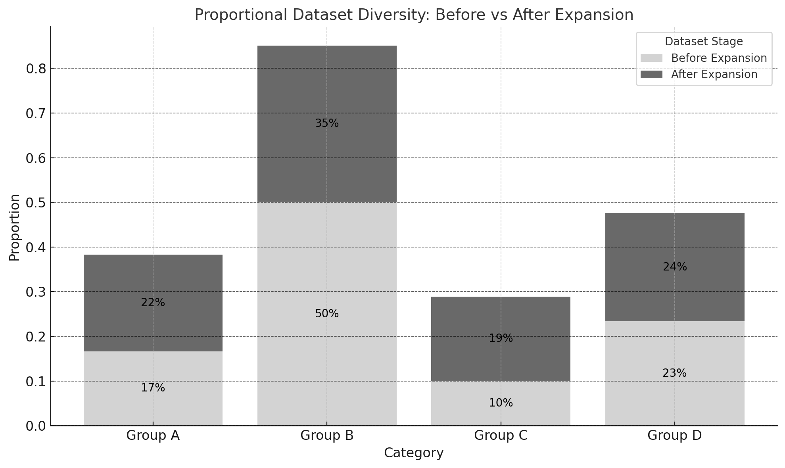
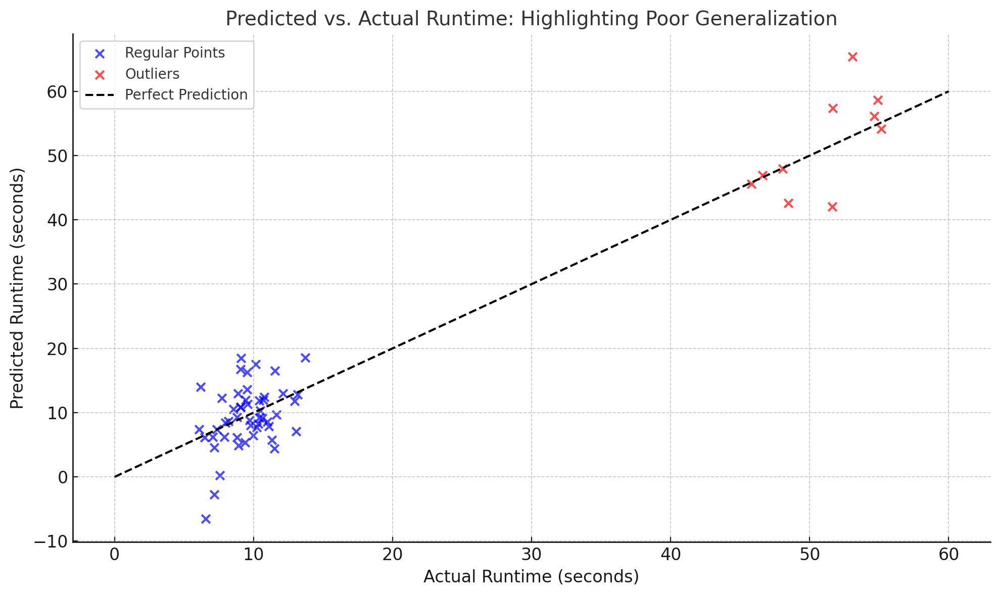
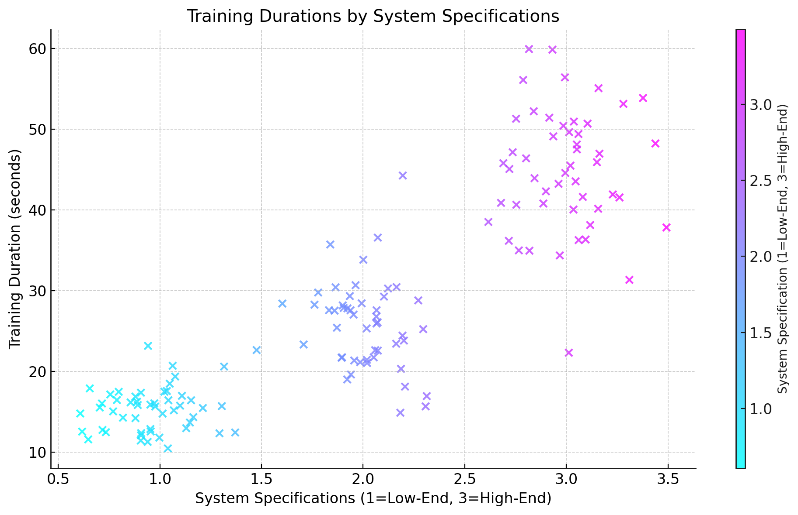
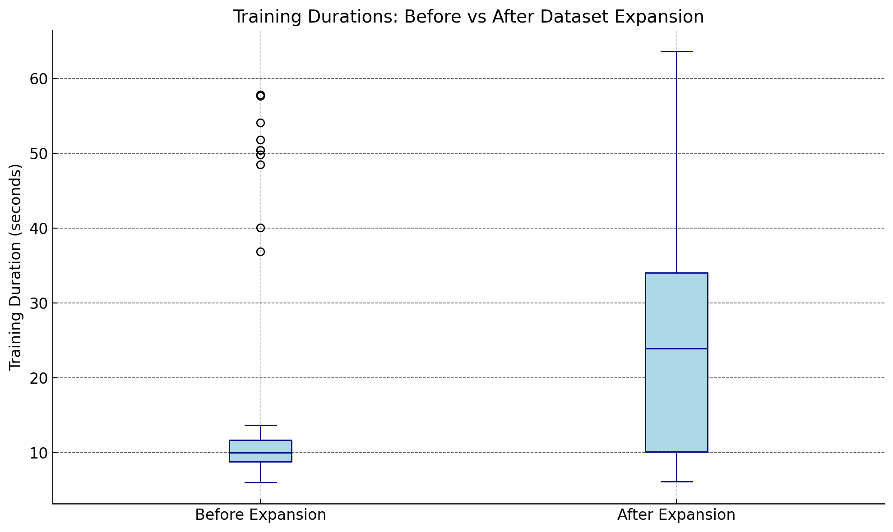

Why Real-World Representation in Machine Learning Datasets Matters

In machine learning, the adage “garbage in, garbage out” rings true. A model’s ability to generalize and perform well hinges on the quality of the data it’s trained on. Recently, I worked on a project predicting machine learning runtime based on system specifications and dataset properties—a seemingly straightforward task that taught me a profound lesson: true representation in datasets is key to building robust models.
In this article, I’ll walk you through my journey, from the initial excitement to the challenges of ensuring real-world representation, and share actionable insights along the way.
What Was the Goal?
The objective was to create a machine learning model capable of predicting how long a training session would take, given specific system specs and dataset properties. This is a practical problem for teams managing computational resources and optimizing training workflows.
At first, the dataset appeared comprehensive: thousands of rows with varying system configurations, dataset sizes, and algorithm complexities. The model trained and validated well within this dataset. But then, the cracks started to show.
The Problem: A Lack of Generalization

When tested on real-world setups where training times ranged from seconds to days, the model’s predictions fell apart. Why? Because the dataset didn’t fully represent the breadth of real-world scenarios:
- System diversity was limited: Most data points were from mid-range setups, neglecting low-end and high-end systems.
- Training durations were narrow: Many samples captured “average” training times but missed edge cases like extremely short or prolonged sessions.
This lack of diversity in the dataset meant the model was essentially “overfitted” to a narrow slice of reality.
What Did I Do to Fix It?
Step 1: Expanding Dataset Diversity
To improve representation, I expanded the dataset to include:
- Low-end systems with limited computational resources.
- High-end systems with advanced hardware specs.
- Training durations spanning from seconds to days.
System Diversity
The first step in the expansion was addressing the imbalance in system specifications. Many data points were clustered around mid-range systems, leaving low-end and high-end systems underrepresented. By including a broader range of system configurations, we achieved a more balanced dataset.

Training Duration Diversity
In addition to system diversity, I expanded the range of training durations. The original dataset primarily focused on average training times, which neglected edge cases like extremely short or prolonged sessions. The inclusion of mid-range and long durations improved the model’s ability to generalize.

This expansion brought much-needed variety, but it also introduced new challenges. For instance, the additional data created noise, causing the model’s performance to temporarily decline. This was my first lesson: balancing dataset diversity and noise is an art.
Key Lessons Learned
| Lesson | Key Takeaway |
|---|---|
| Representation | Include diverse data to ensure better generalization. |
| Balance | Curate diversity to avoid introducing excessive noise. |
| Iteration | Continuously refine and evaluate datasets for real-world applicability. |
Broader Implications
This issue extends far beyond my project. Here are some real-world examples where dataset representation matters:
- Healthcare: Predictive models trained on non-representative patient demographics may lead to biased medical decisions.
- Natural Language Processing: Chatbots trained on limited dialects or languages struggle to serve diverse populations.
- Finance: Risk models trained on historical data can perpetuate systemic biases if certain groups are underrepresented.
Tools and Techniques for Better Representation
If you’re grappling with similar challenges, here are some strategies to improve dataset representation:
EDA to Identify Gaps
Visualize your data to spot underrepresented groups or scenarios.Leverage Synthetic Data
Tools like SMOTE can help augment data in underrepresented categories.Validate on Diverse Scenarios
Test your model on edge cases and real-world setups to catch weaknesses early.Iterate and Refine
Treat data preparation as an ongoing process, not a one-off task.
Why This Matters
Predicting ML runtime isn’t just an academic exercise; it’s a real-world problem with practical stakes:
- Efficient Resource Allocation: Accurate predictions help teams optimize hardware usage and reduce costs.
- Realistic Expectations: Stakeholders can plan timelines effectively, avoiding unnecessary delays or inefficiencies.
Without a dataset that truly reflects the problem space, predictions can lead to wasted resources or poor decision-making.
Final Thoughts
This project reinforced the critical role of data diversity and quality in machine learning. A well-represented dataset doesn’t just make your model work; it makes it reliable, robust, and ready for real-world scenarios.
Have you faced challenges with dataset representation in your projects? Let’s discuss! Share your experiences and strategies in the comments below—I’d love to learn from your insights.